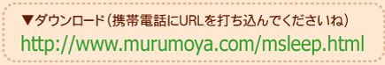
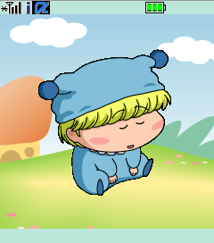
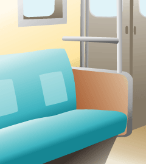

0.94
「わんだほう」EDのこっくりこっくり眠るミルモを、携帯電話の待ち受けｉアプリとして再現してみました。ただそれだけの機能…。
おまけとしてカメラ画像などを背景画面に設定できる機能も付けました。なお、ミルモは目を覚ましませんので(笑)。
バージョンアップしました（0.93→0.94:エラーチェックを強化）。
N900i端末で動作することを確認しました。(2004/9/30)


待ち受け画面がこんな風になります。
背景画像サンプル
（使い方は操作マニュアル「背景画面設定について」を参照ください）

http://www.murumoya.com/etc/back1.gif
http://www.murumoya.com/etc/back1.jpg

http://www.murumoya.com/etc/back2.gif
http://www.murumoya.com/etc/back2.jpg
※一部のN端末、P端末、SH端末、SO端末では仕様により↑の背景画像を
ダウンロードしても選ぶことができないようです。。(2004/10/11)
※ただしJPG形式の画像をメモリースティックなどを経由してマイピクチャのカメラ
画像フォルダにコピーすると、機種により背景として利用できるとのことです(^^)。
(2005/8/7 情報提供：あるとさん）
○動作確認済み機種：
D901i/F901iC/SH901iC/N901iS
D900i/SH900i/P900i/N900i
F700i
D506i/F506i/SH506iC
D505i/F505i/SO505i/SH505i/D505iS/F505iS/SO505iS/SO506iC
（動作可能機種について情報お待ちしております）
○ｉアプリ空き容量 5.6KByte、スクラッチパッド空き容量 36KByteが必要です。
○改善要望やバグなども教えていただけると助かります。
○画像データの二次利用はしないでくださいね。
(2004/9/30)